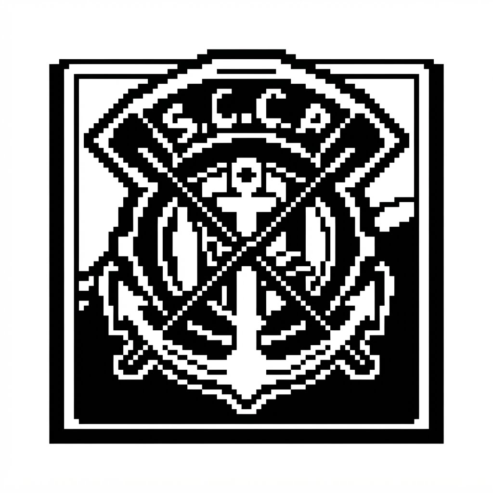

historia corinthiana
por: Yasmim Rota Neris
Bem vindos ao meu site. Aqui vou compartilhar historias e curiosidades da historia do corinthians
fundacao do corinthians
A Sport Club Corinthians Paulista foi fundado no dia 1º de setembro de 1910.A fundação foi realizada por um grupo de cinco operários do bairro do Bom Retiro, em São Paulo: Anselmo Corrêa, Antônio Pereira, Carlos Silva, Joaquim Ambrósio e Raphael Agelli. O nome foi inspirado no Corinthian Football Club, uma famosa equipe inglesa que excursionava pelo Brasil na epoca.
A Democracia Corinthiana surgiu no início da década de 1980, impulsionada por uma grave crise esportiva e financeira no clube, combinada com o cenário de abertura política no final da Ditadura Militar no Brasil.O movimento começou a se desenhar em 1981, quando o Corinthians terminou o Campeonato Brasileiro em uma posição ruim (26º lugar). Diante do fracasso, o presidente do clube, Waldemar Pires, decidiu mudar a diretoria e nomeou o sociólogo Ademir da Guia (conhecido como Adilson Monteiro Alves) como diretor de futebol.Em vez de impor ordens de cima para baixo, Adilson adotou uma postura revolucionária: passou a ouvir os jogadores. Líderes do elenco altamente politizados, como Socrates, Wladimir, Casagrande e Zenon, abraçaram a ideia e estruturaram o movimento.

O funcionamento do movimentoA história do Corinthians é marcada pela união entre luta política e superação esportiva, dividida em quatro momentos essenciais:Democracia Corinthiana (Anos 80): Um sistema revolucionário de autogestão onde todos os votos tinham o mesmo peso (do faxineiro ao craque Sócrates). O movimento desafiou a Ditadura Militar, estampou mensagens políticas na camisa (como "Diretas Já") e provou sua eficiência com o bicampeonato paulista de 1982/1983.A Era de Ouro dos Anos 50: Período de amplo domínio no futebol paulista, liderado pelo lendário ataque com Baltazar e Cláudio, que culminou no histórico título do IV Centenário de São Paulo.O Jejum e a Invasão (1976-1977): Os dolorosos 23 anos sem títulos importantes que consolidaram a paixão da "Fiel Torcida". Essa era teve como ápice a Invasão do Maracanã em 1976 e o fim do tabu em 1977 com o gol de Basílio.Domínio Nacional e Mundial (90 a 2012): A consolidação da grandeza do clube com o primeiro Brasileirão em 1990 (Era Neto), o bicampeonato nacional de 1998/1999, o primeiro Mundial da FIFA em 2000, e a consagração máxima em 2012 com a Libertadores invicta e o Mundial de Clubes no Japão.